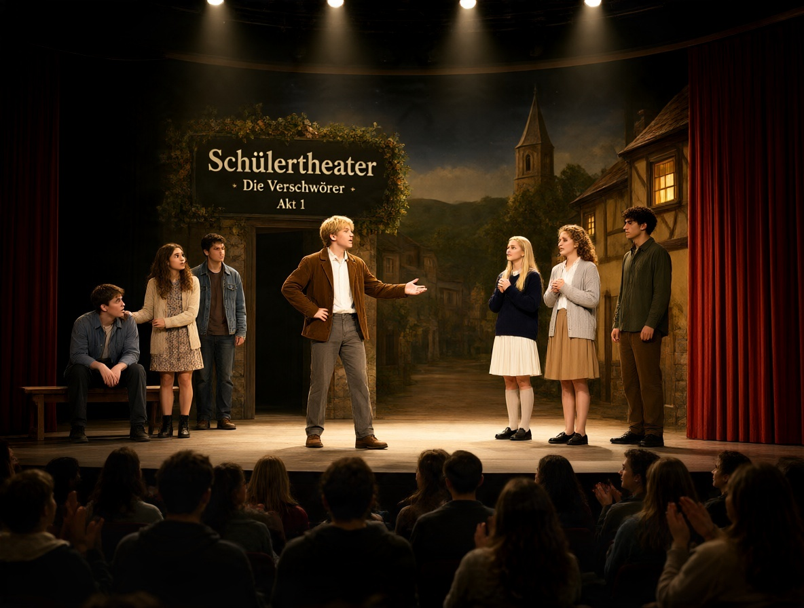

Schule leuchtet – auch nach 15:30 Uhr.
Wir sind Schüler der Semper Oberschule Dresden und zeigen dir unsere Schule so, wie wir sie erleben: morgens im Klassenzimmer, mittags auf dem Hof, nachmittags in Band, Robotik und Theater. Und für deine Eltern gibt's alle echten Infos zur Anmeldung.
Das machen wir, wenn der Unterricht aus ist
Ganztag heißt bei uns nicht „sitz still bis 15:30“ – sondern AGs, Musik, Projekte.
 Musik
Musik
Die Schulband
Probt mittwochs im Musikraum – und man hört sie bis auf den Hof. Spielt beim Sommerfest und Weihnachtssingen.
 MINT
MINT
Robotik-AG
Schrauben, programmieren, Wettbewerbe gewinnen. Unser Roboter „Klaus“ hat einen Pokal im Physik-Kabinett stehen.

BühneTheater-AG
Zweimal pro Woche Aula besetzen, proben, Gänsehaut. Jedes Jahr ein neues Stück – im Frühjahr Premiere.
So läuft unsere Woche
Später Start
Montag beginnt der Unterricht erst um 10:00 Uhr. Wer von weiter weg pendelt, startet ohne Stress in die Woche.
Der volle Ganztag
Unterricht, Mittagessen mit der Klasse, Förderunterricht, AGs und Lernzeit – bis 15:30 Uhr.
Kurzer Freitag
Um 14:45 Uhr ist Schluss – genug Zeit fürs Wochenende, den Verein oder die Bandprobe.
Kommende Termine
Genaue Daten kündigt die Schule rechtzeitig auf der offiziellen Seite an.
Weihnachtssingen
Die ganze Schule singt, die Band spielt, die Aula riecht nach Plätzchen.
Winterheimfahrt
Ski, Rodeln, Abendspuk in der Jugendherberge – mit der ganzen Klasse.
Schnuppertage
Zukunftsfünftklässler begleiten einen Tag lang eine echte Klasse.
Sommerfest
Band-Auftritte, Kuchenstand, offene Klassenzimmer – auch Sie sind eingeladen!
„Ich dachte, private Schule = still sitzen. Stattdessen: Band im Flur, Roboter im Kabinett und Lehrer, die einen mit Vornamen kennen.“– Nele, 8. Klasse
Ihr Kind könnte hier leuchten.
Beim Tag der offenen Tür (voraussichtlich November 2027) führen wir persönlich durchs Haus. Verbindliche Anmeldeinfos gibt es bei der Schule direkt.